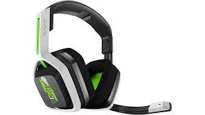
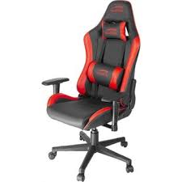
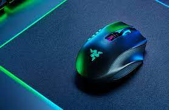
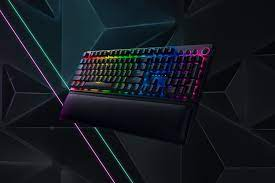
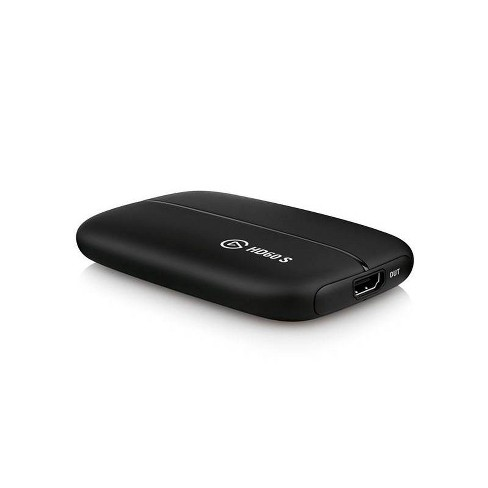

astro gaming headset a20.The astro headset is extremley comfortable and nice to the touch and the was released october 15,2017.recieving over 930 four star reviews. |
sandberg gaming chairthe chair is very comfortable and is great for back support.The chhair also has many colorful design options to chose from. |
razer naga proThe razar mouse is great for quick and comntrolled movements.The mouse is also wireless so you wont have to deal with the hassel of cords. |
Razor blackwidow v3.The razor blackwidow is a great keyboard very smooth and has reactive keys.The keyboard is also used by alot of professional gamers/clans like faze and optic.It has a average rating of 4.5 stars and is easily acquirable |
elgato game capture HD60The elgato game capture is great for catching game footage.It is extremely reliable and has a great track record being used by multiple youtubers. |